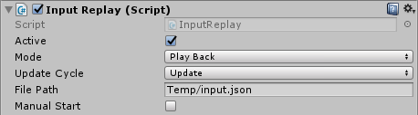
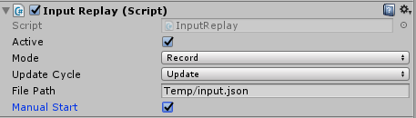

Description
InputReplay provide a very basic class to record and replay inputs.
It's intended as a debug and test tools for developper.
For either try to reproduce a bug using the users recorded input.
Or creating input scenario to test.
It's not intended to be used for game mechanics such as deathcam, so use at your own risk.
Features
- Record all keyboard keys, mouse bouttons, mouse position, mouse world position and mouse scroll delta.
- Support Input Manager virtual Axis and Button.
- Can work in both Update() and FixedUpdate() cycles.
- Data is saved in Json file. So you can easily create input scenario without record.
- Replay is time based.
- Playback delay < 5ms.
- Can start automatically or manually (in manual mode, record and replay time is relative to start time).
- Will act as a broker for UnityEngine.Input when in record mode or disabled.
- Output size (me spamming as much key as I can, as fast as I can) is approximately 400Ko/min.
references
Properties |
|
|---|---|
Vector3 mousePosition { get; } |
The current mouse position in pixel coordinates. (Read Only) |
Vector3 mouseWorldPosition { get; } |
result of Camera.main.ScreenToWorldPoint (Input.mousePosition); |
Vector2 mouseScrollDelta { get; } |
The current mouse scroll delta. (Read Only) |
bool anyKey { get; } |
Is any key or mouse button currently held down? (Read Only) |
bool anyKeyDown { get; } |
Returns true the first frame the user hits any key or mouse button. (Read Only) |
Methods |
|
bool GetKey(KeyCode code) |
Returns true while the user holds down the key identified by name. |
bool GetKeyDown(KeyCode code) |
Returns true during the frame the user starts pressing down the key identified by name. |
bool GetKeyUp(KeyCode code) |
Returns true during the frame the user releases the key identified by name. |
bool GetMouseButton(int button) |
Returns whether the given mouse button is held down. |
bool GetMouseButtonDown(int button) |
Returns true during the frame the user pressed the given mouse button. |
bool GetMouseButtonUp(int button) |
Returns true during the frame the user releases the given mouse button. |
bool GetButton(string name) |
Returns true while the virtual button identified by buttonName is held down. |
bool GetButtonDown(string name) |
Returns true during the frame the user pressed down the virtual button identified by buttonName. |
bool GetButtonUp(string name) |
Returns true the first frame the user releases the virtual button identified by buttonName. |
float GetAxis(string name) |
Returns the value of the virtual axis identified by axisName. |
void StartRecord() |
Start Recording Input (the time used will be relative to the start time). |
void StartPlayBack() |
Start Input Playback (the time used will be relative to the start time). |
void Stop() |
Stop the recording or playback and close streams. |
void configure(Mode m, UpdateFunction c, string p) |
configure InputReplay and try to open stream. |
Configuration Properties |
|
bool active |
true when recording or playing or ready and waiting for manual start (default: false). |
Mode mode |
Selected operation mode (default: Record). |
UpdateFunction UpdateCycle |
Selected cycle to record or play input (default: Update). |
string FilePath |
Json file path to write or read (default: "Temp/input.json"). |
bool manualStart |
if true, wait for StartRecord() or StartPlayBack() to start operation (default: false). |
Types |
|
enum Mode {Record, PlayBack} |
Operation modes. |
enum UpdateFunction {FixedUpdate, Update, Both} |
Record/Playback cycles. |
Examples
Record and playback example
Put the InputReplay.cs script in an empty gameobject or in your character and set it up for record mode.

read from InputReplay just like you would read from UnityEngine.Input it provide the same methods/properties and will redirect UnityEngine.Input's result in record mode.
public class Test1 : MonoBehaviour {
InputReplay myInput;
// Use this for initialization
void Start () {
myInput = GameObject.Find ("GameObject").GetComponent ();
}
// Update is called once per frame
void Update () {
if(myInput.GetKey (KeyCode.A))
Debug.Log('A');
}
}
Json result
{"t":0.0,"gK":[],"gKD":[],"gKU":[],"mP":{"x":-286.5,"y":530.5,"z":0.0},"mWP":{"x":-6.516666889190674,"y":0.8944445848464966,"z":-10.0},"mSD":{"x":0.0,"y":0.0}}
{"t":1.1818948984146119,"gK":[102],"gKD":[102],"gKU":[],"mP":{"x":-286.5,"y":530.5,"z":0.0},"mWP":{"x":-6.516666889190674,"y":0.8944445848464966,"z":-10.0},"mSD":{"x":0.0,"y":0.0}}
{"t":1.281068205833435,"gK":[102,104],"gKD":[104],"gKU":[],"mP":{"x":-286.5,"y":530.5,"z":0.0},"mWP":{"x":-6.516666889190674,"y":0.8944445848464966,"z":-10.0},"mSD":{"x":0.0,"y":0.0}}
{"t":1.3142009973526,"gK":[100,102,104],"gKD":[100],"gKU":[],"mP":{"x":-286.5,"y":530.5,"z":0.0},"mWP":{"x":-6.516666889190674,"y":0.8944445848464966,"z":-10.0},"mSD":{"x":0.0,"y":0.0}}
...
if you want to replay the inputs, just switch the mode to PlayBack. You dont need to change your code as long as you use InputReplay instead of UnityEngine.Input.
Manual start
in the previous example the record and playback start automatically at game start. But if you want you can control when to start recording and playing. Here is an example of a 10 seconds record starting 2 seconds after the game start.
public class Test1 : MonoBehaviour {
InputReplay myInput;
bool recordStarted = false;
// Use this for initialization
void Start () {
myInput = GameObject.Find ("InputReplay").GetComponent ();
}
// Update is called once per frame
void Update () {
if(myInput.GetKey (KeyCode.A))
Debug.Log('A');
if (Time.time >= 2 && !recordStarted) {
myInput.configure();
myInput.StartRecord ();
recordStarted = true;
}
if (Time.time >= 12 && recordStarted) {
myInput.Stop ();
recordStarted = false;
}
}
}
Credits
- Made by lemoissonneur
- Documentation template from Val Themes
- Get Unity software!